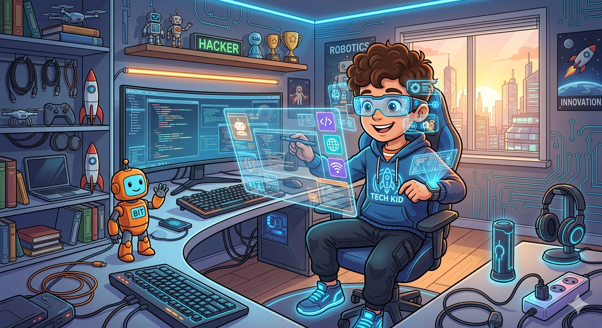

Quem sou eu?
Olá, me chamo Lucas, sou estudante do curso de Gestão da Tecnologia da Informação, na instituição Fatec Jahu. Atuei por 5 anos em uma multinacional na área da logística interna. Atualmente estou buscando oportunidades na área da tecnologia, estou buscando sempre aperfeiçoar e adquirir conhecimentos, sou dedicado e trabalho muito bem em equipe.
Experiência:
-
2021/02 - 2026/04: Volvo Construction Equipments.
-
2019/01 - 2021/02: Dom Bosco Materiais eletricos.
Organização de estoque, vendas online e fisica e emissão de NF
-
2017/01 - 2018/04: JDL Telecomunicações - Empresa própria.
Responsável por atendimento aos clientes, fornecedores e estoque.
Logistica interna, supply chain, SAP, clean manufacturing e melhoria continua

-
Gestão da Tecnologia da Informação - FATEC Jahu.
06/2025 - Cursando.
Tecnologo.
-
Logistica - FATEC Jahu.
02/2020 - 12/2022.
Tecnologo.
-
Ensino médio - Colegio Objetivo Jahu.
01/2010 - 12/2012.
Ensio médio.